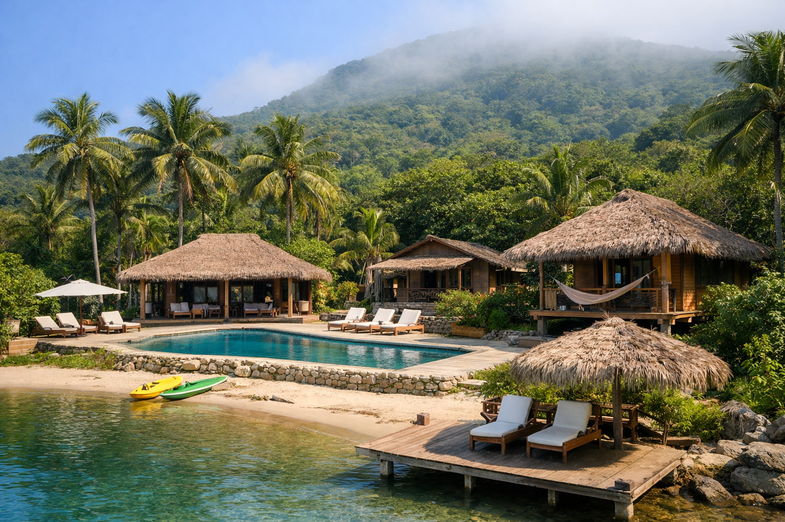
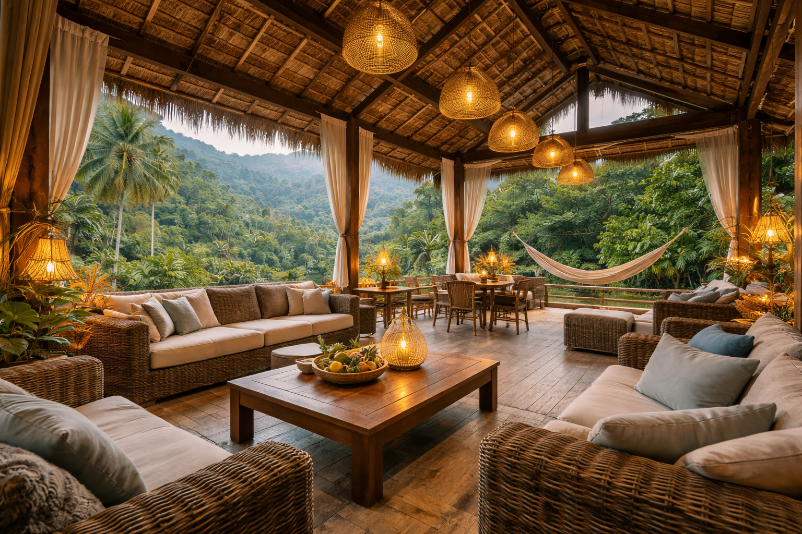
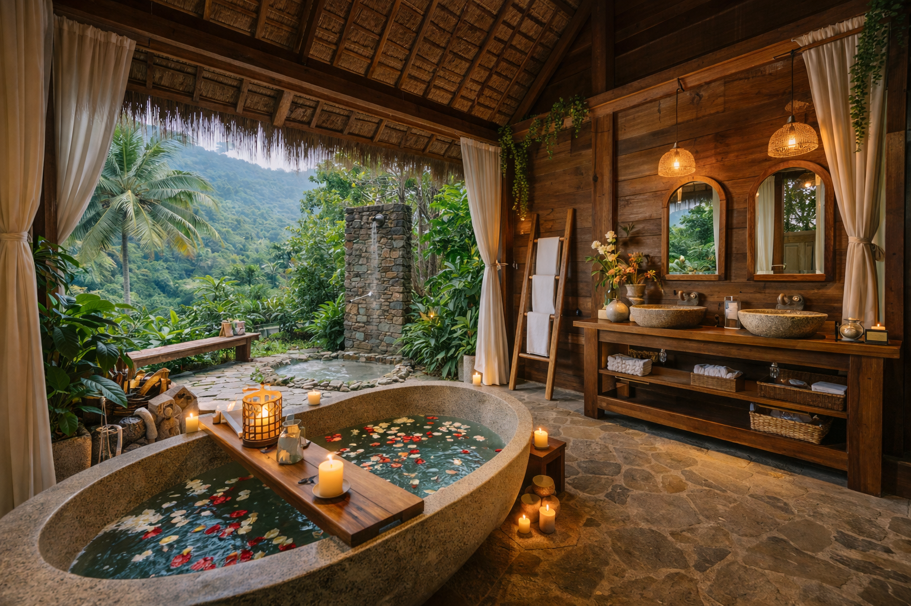
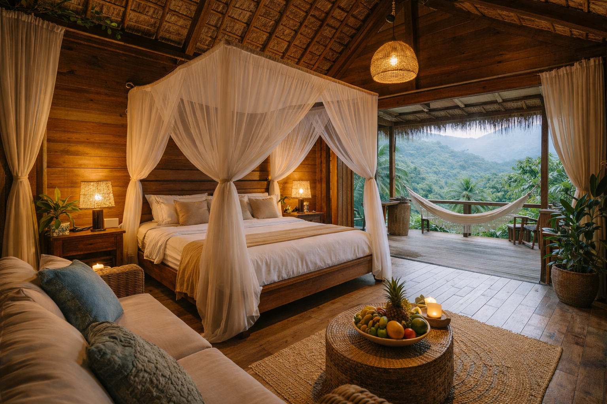

|
|
Refúgio Offline Resort |
|
 |
Desconecte da internet. Reconecte-se com a vida.Em um mundo cada vez mais conectado, encontrar momentos de descanso verdadeiro se tornou essencial. O Refúgio Offline Resort foi criado para oferecer uma experiência diferente: um lugar onde você pode desacelerar, se reconectar com a natureza e aproveitar momentos de tranquilidade longe da correria digital. Localizado em meio à natureza, na Ilha do Cardoso em São Paulo, o resort proporciona um ambiente acolhedor, atividades ao ar livre e uma experiência única de descanso e bem-estar. |
|
 |
 |
 |
Veja o que nossos hóspedes dizem sobre a experiência:
⭐⭐⭐⭐⭐"Uma experiência incrível! Consegui descansar e esquecer do celular." – Ana Souza |
⭐⭐⭐⭐⭐"Perfeito para fugir da rotina. O silêncio e a natureza são únicos." – Carlos Mendes |
⭐⭐⭐⭐"Lugar muito bonito e organizado. As trilhas foram incríveis." – Juliana Ferreira |
⭐⭐⭐⭐⭐"Fui com minha família e todos adoraram. Atendimento excelente." – Roberto Lima |
⭐⭐⭐⭐"Ótimo para relaxar e se desconectar da tecnologia." – Fernanda Alves |
⭐⭐⭐⭐⭐"Experiência única, com muita paz e contato com a natureza." – Lucas Pereira |